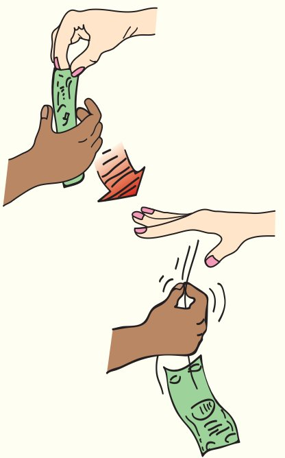
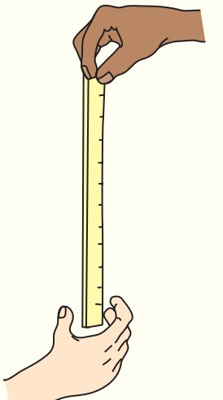
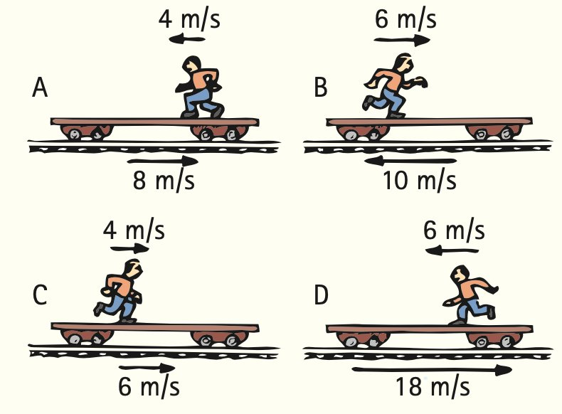
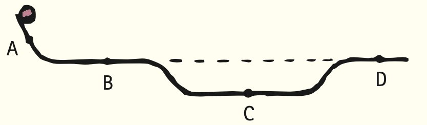
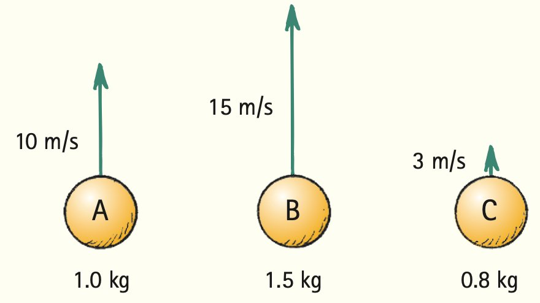

Chapter 3 Review
Summary of Terms (Knowledge)
- Speed
- How fast an object moves; the distance traveled per unit of time.
- Instantaneous speed
- The speed at any instant.
- Average speed
- The total distance traveled divided by the time of travel.
- Velocity
- An object’s speed and direction of motion.
- Vector quantity
- A quantity that has both magnitude and direction.
- Scalar quantity
- A quantity that has only a magnitude, not a direction.
- Acceleration
- The rate at which velocity changes with time; the change in velocity may be in magnitude, or direction, or both.
- Free fall
- Motion under the influence of gravity only.
Reading Check Questions (Comprehension)
3.1 Motion Is Relative
- As you read this in your chair, how fast are you moving relative to the chair? Relative to the Sun?
3.2 Speed
- What two units of measurement are necessary for describing speed?
- What kind of speed is registered by an automobile speedometer: average speed or instantaneous speed?
- What is the average speed in kilometers per hour of a horse that gallops a distance of 15 km in a time of 30 min?
- How far does a horse travel if it gallops at an average speed of 25 km/h for 30 min?
3.3 Velocity
- What is the main difference between speed and velocity?
- If a car moves with a constant velocity, does it also move with a constant speed?
- If a car is moving at 90 km/h and it rounds a corner, also at 90 km/h, does it maintain a constant speed? A constant velocity? Defend your answers.
3.4 Acceleration
- What is the acceleration of a car moving along a straight road that increases its speed from 0 to 100 km/h in 10 s?
- What is the acceleration of a car that maintains a constant velocity of 100 km/h for 10 s? (Why do some of your classmates who correctly answer the preceding question get this question wrong?)
- When are you most aware of your motion in a moving vehicle: when it is moving steadily in a straight line or when it is accelerating? If you were in a car that moved with absolutely constant velocity (no bumps at all), would you be aware of motion?
- Acceleration is generally defined as the time rate of change of velocity. When can it be defined as the time rate of change of speed?
- What did Galileo discover about the amount of speed a ball gained each second when rolling down an inclined plane? What did this say about the ball’s acceleration?
- What relationship did Galileo discover about a ball’s acceleration and the steepness of an incline? What acceleration occurs when the plane is vertical?
3.5 Free Fall
- What exactly is meant by a “freely falling” object?
- What is the gain in speed per second for a freely falling object?
- What is the speed acquired by a freely falling object 5 s after being dropped from a rest position? What is the speed 6 s after?
- The acceleration of free fall is about 10 m/s2. Why does the seconds unit appear twice?
- When an object is thrown upward, how much speed does it lose each second (ignoring air resistance)?
- What relationship between distance traveled and time did Galileo discover for freely falling objects released from rest?
- What is the distance fallen for a freely falling object 1 s after being dropped from a rest position? What is the distance for a 4-s drop?
- What is the effect of air resistance on the acceleration of falling objects?
- Consider these measurements: 10 m, 10 m/s, and 10 m/s2. Which is a measure of speed, which of distance, and which of acceleration?
3.6 Velocity Vectors
- What is the speed over the ground of an airplane flying at 100 km/h relative to the air caught in a 100-km/h right-angle crosswind?
Think and Do (Hands-on Application)
- Grandma is interested in your educational progress. Text Grandma and, without using equations, explain to her the difference between velocity and acceleration.
- Try this with your friends. Hold a dollar bill so that the midpoint hangs between a friend’s fingers and challenge him to catch it by snapping his fingers shut when you release it. He won’t be able to catch it! Explanation: From d = ½ gt2, the bill will fall a distance of 8 centimeters (half the length of the bill) in a time of 1/8 second, but the time required for the necessary impulses to travel from his eye to his brain to his fingers is at least 1/7 second.

- You can compare your reaction time with that of a friend by catching a ruler that is dropped between your fingers. Let a friend hold the ruler as shown and you snap your fingers as soon as you see the ruler released. The number of centimeters that pass through your fingers depends on your reaction time. You can express the result in fractions of a second by rearranging d = ½ gt2. Expressed for time, it is t = √(2d/g) = 0.045√d, where d is in centimeters.
- Stand flat-footed next to a wall. Make a mark on the wall at the highest point you can reach. Then jump vertically and mark this highest point. The distance between the two marks is your vertical jumping distance. Use these data to calculate your personal hang time.

Plug and Chug (Equation Familiarization)
These are “plug-in-the-number” type activities to familiarize you with the equations of the chapter. They are mainly one-step substitutions and are less challenging than Think and Solve.
Speed = distance / time
- Show that the average speed of a rabbit that runs a distance of 30 m in a time of 2 s is 15 m/s.
- Calculate your average walking speed when you step 1.0 m in 0.5 s.
Average speed = total distance covered / time interval
- Show that the acceleration of a car that can go from rest to 100 km/h in 10 s is 10 km/h·s.
- Show that the acceleration of a hamster is 5 m/s2 when it increases its velocity from rest to 10 m/s in 2 s.
Distance = average speed × time
- Show that the hamster in the preceding problem travels a distance of 22.5 m in 3 s.
- Show that a freely falling rock drops a distance of 45 m when it falls from rest for 3 s.
Think and Solve (Mathematical Application)
- You toss a ball straight up with an initial speed of 30 m/s. How high does it go, and how long is it in the air (ignoring air resistance)?
- A ball is tossed with enough speed straight up so that it is in the air several seconds. (a) What is the velocity of the ball when it reaches its highest point? (b) What is its velocity 1 s before it reaches its highest point? (c) What is the change in its velocity during this 1-s interval? (d) What is its velocity 1 s after it reaches its highest point? (e) What is the change in velocity during this 1-s interval? (f) What is the change in velocity during the 2-s interval? (Careful!) (g) What is the acceleration of the ball during any of these time intervals and at the moment the ball has zero velocity?
- What is the instantaneous velocity of a freely falling object 10 s after it is released from a position of rest? What is its average velocity during this 10-s interval? How far will it fall during this time?
- A car takes 10 s to go from v = 0 m/s to v = 25 m/s at constant acceleration. If you wish to find the distance traveled using the equation d = 1/2at2, what value should you use for a?
- Surprisingly, very few athletes can jump more than 2 feet (0.6 m) straight up. Use d = 1/2gt2 to solve for the time one spends moving upward in a 0.6-m vertical jump. Then double it for the “hang time”—the time one’s feet are off the ground.
- A dart leaves the barrel of a blowgun at a speed v. The length of the blowgun barrel is L. Assume that the acceleration of the dart in the barrel is uniform.
- Show that the dart moves inside the barrel for a time of 2L/v.
- If the dart’s exit speed is 15.0 m/s and the length of the blowgun is 1.4 m, show that the time the dart is in the barrel is 0.19 s.
Think and Rank (Analysis)
- Jogging Jake runs along a train flatcar that moves at the velocities shown in positions A–D. From greatest to least, rank Jake’s velocities relative to a stationary observer on the ground. (Call the direction to the right positive.)

- A track is made from a piece of channel iron as shown. A ball released at the left end of the track continues past the various points. Rank the speeds of the ball at points A, B, C, and D, from fastest to slowest. (Watch for tie scores.)

- A ball is released at the left end of three different tracks. The tracks are bent from equal-length pieces of channel iron.
- From fastest to slowest, rank the speeds of the balls at the right ends of the tracks.
- From longest to shortest, rank the tracks in terms of the times for the balls to reach the ends.
- From greatest to least, rank the tracks in terms of the average speeds of the balls. Or do all the balls have the same average speed on all three tracks?

- Three balls of different masses are thrown straight upward with initial speeds as indicated.
- From fastest to slowest, rank the speeds of the balls 1 s after being thrown.
- From greatest to least, rank the accelerations of the balls 1 s after being thrown. (Or are the accelerations the same?)

- Here we see a top view of an airplane being blown off course by winds in three different directions. Use a pencil and the parallelogram rule to sketch the vectors that show the resulting velocities for each case. Rank the speeds of the airplane across the ground from fastest to slowest.

- Here we see top views of three motorboats crossing a river. All have the same speed relative to the water, and all experience the same river flow. Construct resultant vectors showing the speed and direction of each boat. Rank the boats from most to least for
- the time to reach the opposite shore.
- the fastest ride.

Think and Explain (Synthesis)
- Mo measures his reaction time to be 0.18 s in Think and Do Exercise 27. Jo measures her reaction time to be 0.20 s. Who has the more favorable reaction time? Explain.
- Jo, with a reaction time of 0.2 second, rides her bike at a speed of 6.0 m/s. She encounters an emergency situation and “immediately” applies her brakes. How far does Jo travel before she actually applies the brakes?
- What is the impact speed of a car moving at 100 km/h that bumps into the rear of another car traveling in the same direction at 98 km/h?
- Suzie Surefoot can paddle a canoe in still water at 8 km/h. How successful will she be canoeing upstream in a river that flows at 8 km/h?
- Is a fine for speeding based on one’s average speed or instantaneous speed? Explain.
- One airplane travels due north at 300 km/h while another travels due south at 300 km/h. Are their speeds the same? Are their velocities the same? Explain.
- Light travels in a straight line at a constant speed of 300,000 km/s. What is the acceleration of light?
- You’re traveling in a car at some specified speed limit. You see a car moving at the same speed coming toward you. How fast is the car approaching you, compared with the speed limit?
- You are driving north on a highway. Then, without changing speed, you round a curve and drive east. (a) Does your velocity change? (b) Do you accelerate? Explain.
- Jacob says acceleration is how fast you go. Emily says acceleration is how fast you get fast. They look to you for confirmation. Who’s correct?
- Starting from rest, one car accelerates to a speed of 50 km/h, and another car accelerates to a speed of 60 km/h. Can you say which car underwent the greater acceleration? Why or why not?
- What is the acceleration of a car that moves at a steady velocity of 100 km/h for 100 s? Explain your answer.
- Which is greater: an acceleration from 25 km/h to 30 km/h or from 96 km/h to 100 km/h, both occurring during the same time?
- Galileo experimented with balls rolling on inclined planes of various angles. What is the range of accelerations from angles 0° to 90° (from what acceleration to what)?
- Suppose that a freely falling object were somehow equipped with a speedometer. By how much would its reading in speed increase with each second of fall?
- Suppose that the freely falling object in the preceding exercise were also equipped with an odometer. Would the readings of distance fallen each second indicate equal or different falling distances for successive seconds?
- For a freely falling object dropped from rest, what is the acceleration at the end of the fifth second of fall? Tenth second of fall? Defend your answers.
- If air resistance can be ignored, how does the acceleration of a ball that has been tossed straight upward compare with its acceleration if simply dropped?
- When a ballplayer throws a ball straight up, by how much does the speed of the ball decrease each second while ascending? In the absence of air resistance, by how much does the speed increase each second while descending? What is the time required for rising compared to falling?
- Boy Bob stands at the edge of a cliff (as in Figure 3.8) and throws a ball nearly straight up at a certain speed and another ball nearly straight down with the same initial speed. If air resistance is negligible, which ball will have the greater speed when it strikes the ground below?
- Answer the preceding question for the case where air resistance is not negligible—where air drag affects motion.
- While rolling balls down an inclined plane, Galileo observes that the ball rolls 1 cubit (the distance from elbow to fingertip) as he counts to 10. How far will the ball have rolled from its starting point when he has counted to 20?
- Consider a vertically launched projectile when air drag is negligible. When is the acceleration due to gravity greatest: when ascending, at the top, or when descending? Defend your answer.
- Extend Tables 3.2 and 3.3 to include times of fall of 6 to 10 s, assuming no air resistance.
- If there were no air resistance, why would it be dangerous to go outdoors on rainy days?
- As speed increases for an object in free fall, does acceleration increase also?
- A ball tossed upward will return to the same point with the same initial speed when air resistance is negligible. When air resistance is not negligible, how does the return speed compare with its initial speed?
- Why would a person’s hang time be considerably greater on the Moon than on Earth?
- Why does a stream of water get narrower as it falls from a faucet?
- Vertically falling rain makes slanted streaks on the side windows of a moving automobile. If the streaks make an angle of 45°, how does the speed of the automobile compare with the speed of the falling rain?
- Make up a multiple-choice question that would check a classmate’s understanding of the distinction between speed and velocity.
- Make up a multiple-choice question that would check a classmate’s understanding of the distinction between velocity and acceleration.